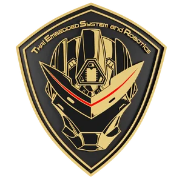
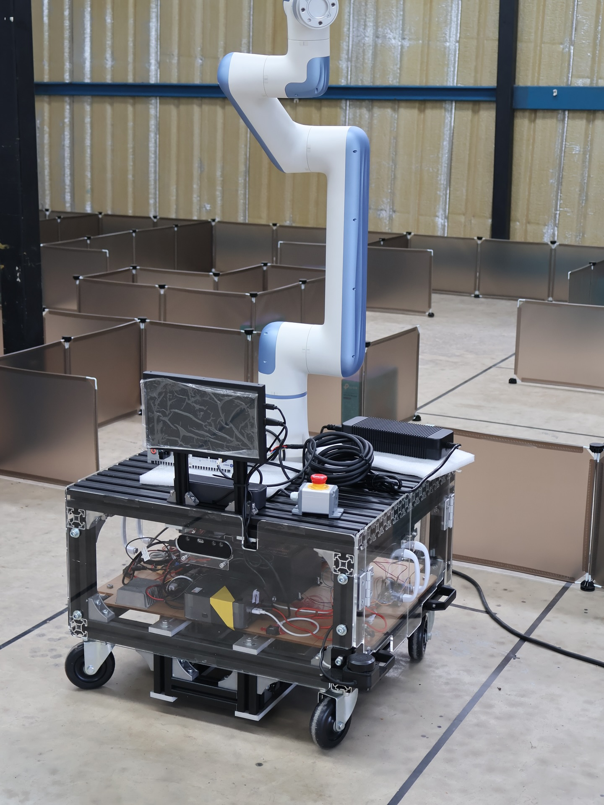
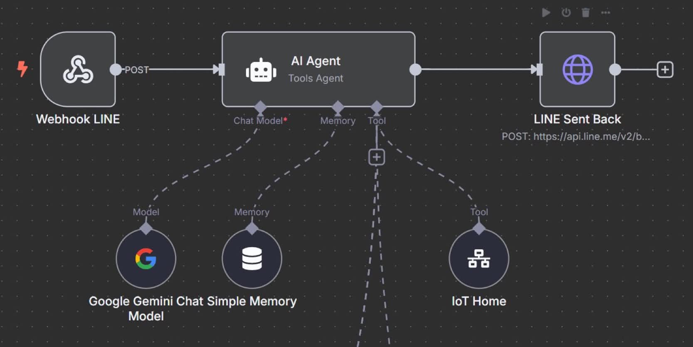

Assistant Engineer
Internship at TESR Co., Ltd.
1 Apr 2025 - 1 Jun 2025
ROS2
AMR
n8n
IoT Automation
Industrial Logistics
- Designed and developed an Autonomous Mobile Robot (AMR) for industrial logistics, optimizing logistics efficiency within factory environments.
- Architected AI-integrated IoT workflows using n8n to automate data processing and enhance system connectivity.
- Delivered technical training sessions on robotic arm operation and programming for clients, ensuring seamless technology adoption.
Internship Project Showcase

AMR Hardware

n8n Workflow